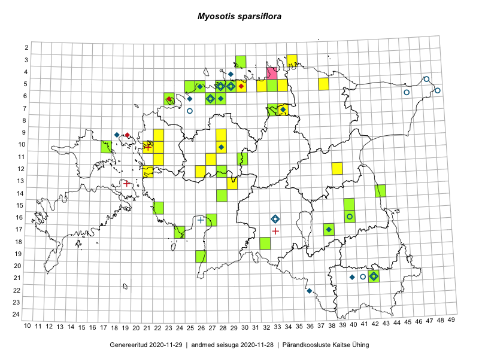

Myosotis sparsiflora
Uuendatud: 2016-12-07
Kaardile koondatud taksonid: Myosotis sparsiflora J.G.Mikan ex Pohl

Kaart põhineb 36 kirjel, neist vaatlusi 34 ja eksemplare 2. Taksonit on leitud 25 ruudust.
| Ruut | Vaatleja(d) | Vaatlusaeg | Kirje tüüp | Viide andmebaasikirjele |
|---|---|---|---|---|
| 12-28 | Tiit Hallikma, Toomas Kukk, Indrek Tammekänd | 2015-06-09 | ruut/ala | vaata PlutoFis |
| 05-32 | Rein Kalamees | 2015-06-08 | ruut/ala | vaata PlutoFis |
| 10-17 | Toomas Kukk, Eerik Leibak | 2015-08-12 | ruut/ala | vaata PlutoFis |
| 12-28 | Toomas Kukk, Indrek Tammekänd, Tiit Hallikma | 2015-06-09 | punkt | vaata PlutoFis |
| 03-35 | Rein Kalamees, Kersti Püssa | 2015-05-31 | ruut/ala | vaata PlutoFis |
| 05-33 | Rein Kalamees, Kersti Püssa | 2015-06-02 | ruut/ala | vaata PlutoFis |
| 14-28 | Ott Luuk, Hannes Pehlak | 2015-06-10 | ruut/ala | vaata PlutoFis |
| 07-33 | Jana-Maria Habicht, Ester Valdvee | 2015-05-29 | ruut/ala | vaata PlutoFis |
| 07-34 | Kai Rünk, Ülle Jõgar, Illi Tarmu | 2015-05-22T07:00Z | ruut/ala | vaata PlutoFis |
| 18-32 | Maria Abakumova, Helle Mäemets | 2015-05-23 | ruut/ala | vaata PlutoFis |
| 07-34 | Kai Rünk, Ülle Jõgar, Illi Tarmu | 2015-03-23 | punkt | vaata PlutoFis |
| 09-28 | Aat Sarv | 2015-05-02 | ruut/ala | vaata PlutoFis |
| 03-30 | Mari Reitalu, Tõnu Ploompuu, Ott Luuk, Peedu Saar | 2014-06-01 | ruut/ala | vaata PlutoFis |
| 17-38 | Toomas Kukk, Sulev Savisaar, Urmas Laansoo, Ott Luuk, Ülle Reier, Kersti Tambets | 2016-05-11 | punkt | vaata PlutoFis |
| 17-38 | Toomas Kukk, Sulev Savisaar, Urmas Laansoo, Ott Luuk, Ülle Reier, Kersti Tambets | 2016-05-11 | punkt | vaata PlutoFis |
| 10-22 | Tõnu Ploompuu | 2015-08-21 | ruut/ala | vaata PlutoFis |
| 12-26 | Tõnu Ploompuu | 2015-06-23 | ruut/ala | vaata PlutoFis |
| 15-22 | Toomas Kukk, Peedu Saar | 2016-05-14 | ruut/ala | vaata PlutoFis |
| 05-29 | Peedu Saar | 2016-05-24 | punkt | vaata PlutoFis |
| 05-29 | Peedu Saar | 2016-05-24 | ruut/ala | vaata PlutoFis |
| 06-28 | Tõnu Ploompuu | 2015-06-06 | ruut/ala | vaata PlutoFis |
| 09-22 | Sirje Lagle, Tõnu Ploompuu | 2015-05-15 | ruut/ala | vaata PlutoFis |
| 06-28 | Toomas Kukk | 2016-06-02 | ruut/ala | vaata PlutoFis |
| 05-28 | Peedu Saar | 2016-06-01 | punkt | vaata PlutoFis |
| 05-28 | Peedu Saar | 2016-06-01 | ruut/ala | vaata PlutoFis |
| 10-21 | Tõnu Ploompuu | 2015-05-02 | ruut/ala | vaata PlutoFis |
| 11-22 | Tõnu Ploompuu | 2015-06-03 | ruut/ala | vaata PlutoFis |
| 11-27 | Andrus Jair, Tõnu Ploompuu | 2015-05-17 | ruut/ala | vaata PlutoFis |
| 05-38 | Thea Kull, Toomas Kukk | 2016-09-05 | ruut/ala | vaata PlutoFis |
| 05-38 | Thea Kull, Toomas Kukk | 2016-09-05 | punkt | vaata PlutoFis |
| 16-40 | Peedu Saar | 2016-05-22 | punkt | vaata PlutoFis |
| 16-40 | Peedu Saar | 2016-05-22 | ruut/ala | vaata PlutoFis |
| 05-29 | Kadi-Liis Kesler, Tiina Elvisto | 2015-05-12 | ruut/ala | vaata PlutoFis |
| 05-26 | Kadi-Liis Kesler | 2015-05-31 | ruut/ala | vaata PlutoFis |
| 07-33 | Jana-Maria Habicht | 2015-05-29 | eksemplar | vaata PlutoFis |
| 03-30 | Ott Luuk | 2014-06-01 | eksemplar | vaata PlutoFis |